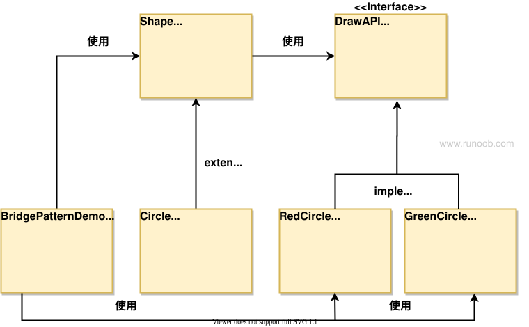

Patrón Puente
Bridge (Puente) se utiliza para desacoplar la abstracción y la implementación, de modo que ambas puedan variar de forma independiente. Este tipo de patrón de diseño pertenece a los patrones estructurales. Logra el desacoplamiento proporcionando una estructura puente entre la abstracción y la implementación.
Este patrón involucra una interfaz que actúa como puente, de modo que la funcionalidad de las clases de entidad sea independiente de las clases que implementan la interfaz; estos dos tipos de clases pueden modificarse estructuralmente sin afectarse entre sí.
El propósito del patrón puente es separar la abstracción de la implementación para que puedan variar de forma independiente. Este patrón separa la parte abstracta de un objeto de su parte de implementación, permitiendo que ambas cambien de forma independiente. Conecta las partes de abstracción e implementación mediante composición, en lugar de herencia.
Demostraremos el uso del patrón puente (Bridge Pattern) mediante el siguiente ejemplo. En él, se pueden dibujar círculos de diferentes colores utilizando los mismos métodos de la clase abstracta pero con diferentes clases de implementación del puente.
Introducción
Intención
Se utiliza para separar la parte abstracta de la parte de implementación, de modo que puedan variar de forma independiente.
Problema principal que resuelve
Evita el problema de explosión de clases causado por la herencia, proporcionando una forma de extensión más flexible.
Escenarios de uso
Cuando el sistema puede clasificarse desde múltiples ángulos y cada ángulo puede variar de forma independiente, el patrón puente es adecuado.
Método de implementación
- Separar la clasificación de múltiples ángulos: Separar la lógica de clasificación de diferentes ángulos, permitiendo que varíen de forma independiente.
- Reducir el acoplamiento: Reducir el grado de acoplamiento entre la abstracción y la implementación.
Código clave
- Clase abstracta: Definir una clase abstracta como parte del sistema.
- Clase de implementación: Definir una o más clases de implementación, asociadas con la clase abstracta mediante agregación (no herencia).
Ejemplos de aplicación
- Reencarnación: Separación del alma (abstracción) y el cuerpo (implementación), que permite al alma elegir diferentes cuerpos.
- Interruptor de pared: Separación del interruptor (abstracción) y la implementación interna (implementación); el usuario no necesita preocuparse por el mecanismo interno de funcionamiento del interruptor.
Ventajas
- Separación de la abstracción y la implementación: Mejora la flexibilidad y la mantenibilidad del sistema.
- Fuerte capacidad de extensión: Se pueden extender de forma independiente la abstracción y la implementación.
- Transparencia de los detalles de implementación: El usuario no necesita conocer los detalles de implementación.
Desventajas
- Dificultad de comprensión y diseño: El patrón puente aumenta la dificultad de comprensión y diseño del sistema.
- Asociación por agregación: Requiere que los desarrolladores diseñen y programen en la capa de abstracción.
Sugerencias de uso
- Cuando el sistema necesite aumentar la flexibilidad entre el rol de abstracción y el rol de implementación concreta, considere usar el patrón puente.
- Para sistemas que no desean usar herencia o que ven aumentar drásticamente el número de clases debido a la herencia multinivel, el patrón puente es especialmente adecuado.
- Cuando una clase tiene dos dimensiones que varían de forma independiente y ambas necesitan extenderse, use el patrón puente.
Notas
- El patrón puente es adecuado para dos dimensiones que varían de forma independiente, asegurando que puedan extenderse y cambiar de forma independiente.
Estructura
A continuación se presentan los roles clave del patrón puente:
- Abstracción (Abstraction): define la interfaz abstracta, que generalmente contiene una referencia a la interfaz de implementación.
- Abstracción refinada (Refined Abstraction): es la extensión de la abstracción; puede ser una subclase de la clase abstracta o una clase de implementación concreta.
- Implementación (Implementor): define la interfaz de implementación, proporcionando la interfaz para las operaciones básicas.
- Implementación concreta (Concrete Implementor): clase concreta que implementa la interfaz de implementación.
Implementación
Tenemos una interfaz que actúa como implementación del puente,DrawAPIy clases de entidad que implementan laDrawAPIinterfaz.RedCircle、GreenCircle。Shapees una clase abstracta que utilizaráDrawAPIlos objetos de.BridgePatternDemoLa clase usa laShapeclase para dibujar círculos de diferentes colores.

Paso 1
Crear la interfaz de implementación del puente.
DrawAPI.java
Paso 2
Crear las clases de entidad de implementación del puente que implementan laDrawAPIinterfaz.
RedCircle.java
GreenCircle.java
Paso 3
Usar laDrawAPIinterfaz para crear la clase abstracta.Shape。
Shape.java
Paso 4
Crear las clases de entidad que implementan laShapeclase abstracta.
Circle.java
Paso 5
Usar laShape 和 DrawAPIclase para dibujar círculos de diferentes colores.
BridgePatternDemo.java
Paso 6
Ejecutar el programa y mostrar el resultado:
Drawing Circle[ color: red, radius: 10, x: 100, 100] Drawing Circle[ color: green, radius: 10, x: 100, 100]
Artículos relacionados recomendados
Otras extensiones
jade
guo***u_study@163.com
Patrón Puente: Bridge Pattern
Colocar la abstracción y la implementación en dos jerarquías de clases diferentes para que puedan variar de forma independiente. — Head First Design Patterns
Separar la jerarquía de la capa funcional de la clase y la jerarquía de la capa de implementación，permitir que ambas puedan variar de forma independiente，y tender un puente entre ambas para lograr el puente. — Patrones de diseño ilustrados
Jerarquía de la capa funcional de la clase: la clase padre tiene funciones básicas y en las subclases se añaden nuevas funciones;
Jerarquía de la capa de implementación de la clase: la clase padre define la interfaz declarando métodos abstractos, y las subclases implementan la interfaz implementando métodos concretos;
Hay cuatro roles en el patrón puente:
Rol de abstracción: Utiliza la interfaz proporcionada por el rol implementador para definir la interfaz de funciones básicas.
Mantiene el rol implementador y le delega en la interfaz funcional, actuando como puente;
Nota: el rol de abstracción no significa que sea una clase abstracta, sino que abstrae la implementación.
Rol de abstracción refinada: Como subclase del rol de abstracción, añade nuevas funciones, es decir, nuevas interfaces (métodos); constituye con él la jerarquía de la capa funcional de la clase;
Rol implementador: Proporciona la interfaz utilizada por el rol de abstracción; es una clase abstracta o una interfaz.
Rol implementador concreto: Como subclase del rol implementador, implementa la interfaz mediante la implementación de métodos concretos; constituye con él la jerarquía de la capa de implementación de la clase.
Si la abstracción y la implementación no pueden variar de forma independiente, entonces no es un patrón puente.
jade
guo***u_study@163.com
yjb
151***64310@163.com
En el patrón puente, las clases de implementación concretas se implementan en la interfaz que actúa como «puente», y la interfaz «puente» solo contiene métodos abstractos que implementan la funcionalidad; las clases de implementación concretas heredan del «puente» y no heredan directamente de la clase abstracta de la clase de implementación. La clase abstracta y las clases de implementación concretas son estructuralmente independientes entre sí; sus cambios mutuos no se afectan entre sí. Mientras el «puente» no cambie, los cambios de ambas partes no se afectarán entre sí.
En cuanto al programa de ejemplo del tutorial anterior, las implementaciones concretas son RedCircle y GreenCircle, y su clase abstracta es Shape. Según la lógica general, heredaríamos directamente de Shape para crear diferentes objetos concretos, pero en el patrón puente la conexión entre la abstracción y las implementaciones concretas se establece a través del «puente» DrawAPI, invocando los métodos de DrawAPI para la implementación concreta.
yjb
151***64310@163.com
狐仙大人OO
165***6226@qq.com
Se puede pensar así: Zhu Bajie se reencarna; el alma está en un lado del río, y al otro lado del río hay dos cuerpos, un cerdo rojo y un cerdo verde;
El alma necesita cruzar el puente y elegir el cuerpo del cerdo rojo o el cuerpo del cerdo verde para completar la reencarnación.
En el ejemplo anterior, el cerdo rojo y el cerdo verde son RedCircle y GreenCircle, el alma es la clase Circle, y ese puente es la interfaz drawAPI.
狐仙大人OO
165***6226@qq.com
Siskin.xu
sis***@sohu.com
Método en Python:
# Bridge Pattern with Python Code from abc import abstractmethod,ABCMeta # 创建桥接实现接口 class DrawAPI(metaclass=ABCMeta): @abstractmethod def drawCircle(self,inRadius,inX,inY): pass # 创建实现了DrawAPI接口的实体桥接实现类 class RedCircle(DrawAPI): def drawCircle(self,inRadius,inX,inY): print("Drawing Circle [ color: red , radius: {0} , x : {1} , y : {2}]".format(inRadius, inX, inY)) class GreenCircle(DrawAPI): def drawCircle(self,inRadius,inX,inY): print("Drawing Circle [ color: green , radius: {0} , x : {1} , y : {2}]".format(inRadius, inX, inY)) # 使用DrawAPI接口创建抽象类Shape class Shape(metaclass=ABCMeta): _drawAPI = None def __init__(self, inDrawAPI): self._drawAPI = inDrawAPI # 创建实现了Shape接口的实体类 class Circle(Shape): _intX = 0 _intY = 0 _intRadius = 0 def __init__(self,inX,inY,inRadius,inDrawAPI): Shape.__init__(self,inDrawAPI) self._intX = inX self._intY = inY self._intRadius = inRadius def draw(self): self._drawAPI.drawCircle(self._intRadius,self._intX,self._intY) # 调用输出 if __name__ == '__main__': redCircle = Circle(100,100,10, RedCircle()) greenCircle = Circle(100,100,10, GreenCircle()) redCircle.draw() greenCircle.draw()Siskin.xu
sis***@sohu.com
泡水鱼干
626***755@qq.com
Implementación en PHP:
/** * Interface DrawAPI * 实现化(Implementor)角色：这个角色给出实现化角色的接口，但不给出具体的实现。 */ interface DrawAPI { public function drawCircle(int $radius, int $x, int $y); } /** * Class RedCircle * 具体实现化(ConcreteImplementorA)角色 * 这个角色给出实现化角色接口的具体实现。 */ class RedCircle implements DrawAPI { public function drawCircle(int $radius, int $x, int $y) { echo "Drawing Circle[ color: red, radius: " . $radius . ", x: " . $x . ", " . $y . "]" . PHP_EOL; } } class GreenCircle implements DrawAPI { public function drawCircle(int $radius, int $x, int $y) { echo "Drawing Circle[ color: green, radius: " . $radius . ", x: " . $x . ", " . $y . "]" . PHP_EOL; } } /** * Class Shape * 抽象化(Abstraction)角色 * 给出定义,并保存一个对象实例化的引用 */ abstract class Shape{ protected $_drawAPI; public function __construct(DrawAPI $drawAPI) { $this->_drawAPI = $drawAPI; } public abstract function draw(); } /** * Class Circle * 修正抽象化角色 RefinedAbstraction * 扩展抽象化角色，改变和修正父类对抽象化的定义。 */ class Circle extends Shape{ private $_x; private $_y; private $_radius; public function __construct(int $x,int $y,int $radius,DrawAPI $drawAPI) { parent::__construct($drawAPI); $this->_x = $x; $this->_y = $y; $this->_radius = $radius; } public function draw() { // TODO: Implement draw() method. $this->_drawAPI->drawCircle($this->_x,$this->_y,$this->_radius); } } class Demo{ public static function main(){ $red = new Circle(100,100,10,new RedCircle()); $green = new Circle(100,100,10,new GreenCircle()); $red->draw(); $green->draw(); } } Demo::main();泡水鱼干
626***755@qq.com
Pensar que los sueños son fáciles.
512***520@qq.com
En palabras simples, si tienes 3 pinceles con diferentes puntas y 12 pigmentos, puedes dibujar 3 * 12 tipos de líneas; pero para lograr el mismo efecto con crayones, necesitarías 36.
El primero es el patrón Bridge (los diferentes modelos de bolígrafo son una dimensión de variación, los diferentes colores de pigmento son otra dimensión, y las dos dimensiones no se afectan entre sí), mientras que el segundo es herencia múltiple (el modelo del bolígrafo y el pigmento afectan juntos al crayón). Una vez entendido, lo abstraemos en código:
La clase pen es una clase abstracta que tiene un método draw(). Para usar el pincel, necesitamos agregar un color y luego ejecutar el método draw para dibujar ese color.
public abstract class Pen { public abstract void draw(Color color); }Podemos heredar de la clase abstracta pen para implementar múltiples modelos de bolígrafo.
public class PenOne extends Pen { public void draw(Color color) { System.out.println("当前一号笔在使用" + color.use() + "画画"); } } public class PenTwo extends Pen { public void draw(Color color) { System.out.println("当前二号笔在使用" + color.use() + "画画"); } }color es una interfaz, con clases de implementación como red, blue, etc.
public interface Color { public String use(); } public class Blue implements Color { public String use() { return "蓝色"; } } public class Red implements Color { public String use() { return "红色"; } }Entonces podemos empezar a dibujar:
public class User { public static void main(String[] args) { Pen pen = new PenOne(); pen.draw(new Red()); } }Resultado: El bolígrafo número 1 está dibujando en rojo
En este punto, para ampliar un nuevo modelo de bolígrafo, solo necesitamos agregar una nueva clase de implementación de Pen, y la clase de caja de pigmentos no se ve afectada; de manera similar, ampliar la cantidad de pigmentos no afecta a los bolígrafos.
Pensé que los sueños eran fáciles
512***520@qq.com
squid233
513***220@qq.com
Versión en C++:
#include <iostream> using std::cout; using std::endl; // 创建桥接实现接口。 __interface DrawAPI { public: virtual void drawCircle(int __radius, int __x, int __y) = 0; }; // 创建实现了 DrawAPI 接口的实体桥接实现类。 class RedCircle : public DrawAPI { public: void drawCircle(int __radius, int __x, int __y) override { cout << "Drawing Circle[ color: red, radius: " << __radius << ", x: " << __x << ", " << __y << "]" << endl; } }; class GreenCircle : public DrawAPI { public: void drawCircle(int __radius, int __x, int __y) override { cout << "Drawing Circle[ color: green, radius: " << __radius << ", x: " << __x << ", " << __y << "]" << endl; } }; // 使用 DrawAPI 接口创建抽象类 Shape。 class Shape { protected: DrawAPI* _drawAPI; Shape(DrawAPI* __drawAPI) : _drawAPI(__drawAPI) {} public: virtual void draw() = 0; }; // 创建实现了 Shape 抽象类的实体类。 class Circle : public Shape { private: int _x, _y, _radius; public: Circle(int __x, int __y, int __radius, DrawAPI* __drawAPI) : Shape::Shape(__drawAPI), _x(__x), _y(__y), _radius(__radius) {} void draw() override { _drawAPI->drawCircle(_radius, _x, _y); } }; // 使用 Shape 和 DrawAPI 类画出不同颜色的圆。 int main() { auto pRedCircle = new RedCircle(); auto pGreenCircle = new GreenCircle(); auto redCircle = Circle(100, 100, 10, pRedCircle); auto greenCircle = Circle(100, 100, 10, pGreenCircle); redCircle.draw(); greenCircle.draw(); delete pRedCircle; delete pGreenCircle; return 0; }squid233
513***220@qq.com
RUNOOB
429***967@qq.com
La idea central del patrón Bridge es separar la abstracción y la implementación para que puedan cambiar de forma independiente sin afectarse mutuamente. La parte de abstracción se encarga de definir la interfaz abstracta, y la parte de implementación se encarga de proporcionar la implementación concreta. A través del patrón Bridge, la parte de abstracción y la parte de implementación pueden extenderse y cambiar de forma independiente sin afectarse entre sí.
A continuación se muestra un ejemplo sencillo que demuestra cómo usar el patrón Bridge para conectar la parte de abstracción y la parte de implementación:
// 实现接口 interface Implementor { void operationImpl(); } // 具体实现类 class ConcreteImplementorA implements Implementor { @Override public void operationImpl() { // 具体实现A } } class ConcreteImplementorB implements Implementor { @Override public void operationImpl() { // 具体实现B } } // 抽象类 abstract class Abstraction { protected Implementor implementor; public Abstraction(Implementor implementor) { this.implementor = implementor; } public abstract void operation(); } // 扩展抽象类 class RefinedAbstraction extends Abstraction { public RefinedAbstraction(Implementor implementor) { super(implementor); } @Override public void operation() { // 扩展抽象的操作 implementor.operationImpl(); } } // 示例代码 public class BridgePatternExample { public static void main(String[] args) { Implementor implementorA = new ConcreteImplementorA(); Abstraction abstractionA = new RefinedAbstraction(implementorA); abstractionA.operation(); Implementor implementorB = new ConcreteImplementorB(); Abstraction abstractionB = new RefinedAbstraction(implementorB); abstractionB.operation(); } }En el ejemplo anterior, Implementor define la interfaz de implementación, ConcreteImplementorA y ConcreteImplementorB son las clases de implementación concretas. Abstraction es una clase abstracta que contiene una referencia a Implementor y define la interfaz de operación abstracta. RefinedAbstraction es una extensión de Abstraction, implementa la interfaz de operación abstracta y llama a los métodos de la implementación durante las operaciones.
A través del patrón Bridge, se puede seleccionar dinámicamente la implementación concreta en tiempo de ejecución, y la parte de abstracción y la parte de implementación pueden extenderse y cambiar de forma independiente. Este desacoplamiento ayuda a mejorar la flexibilidad y mantenibilidad del sistema.
RUNOOB
429***967@qq.com